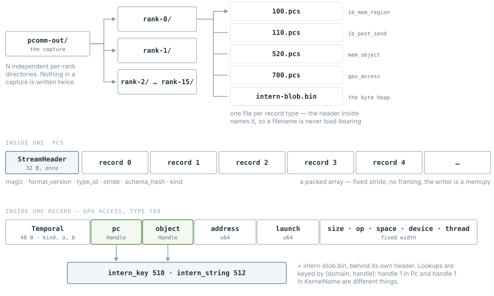
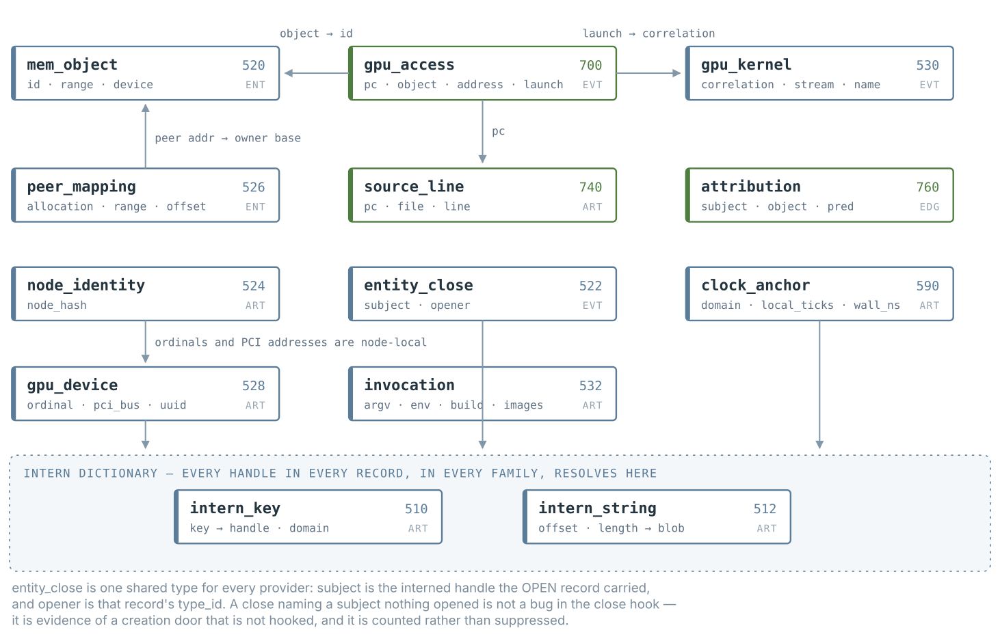
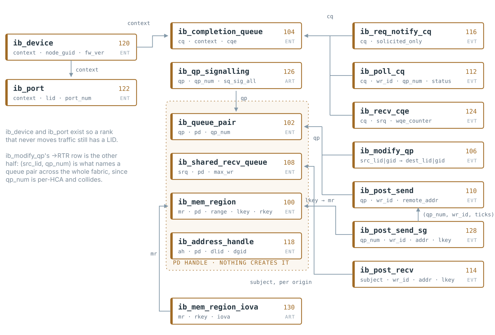
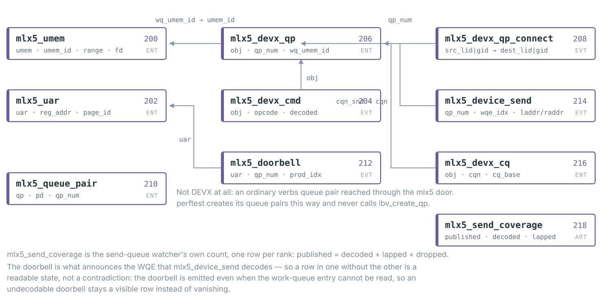
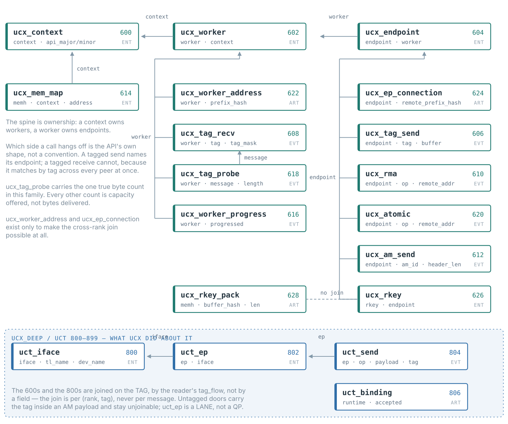
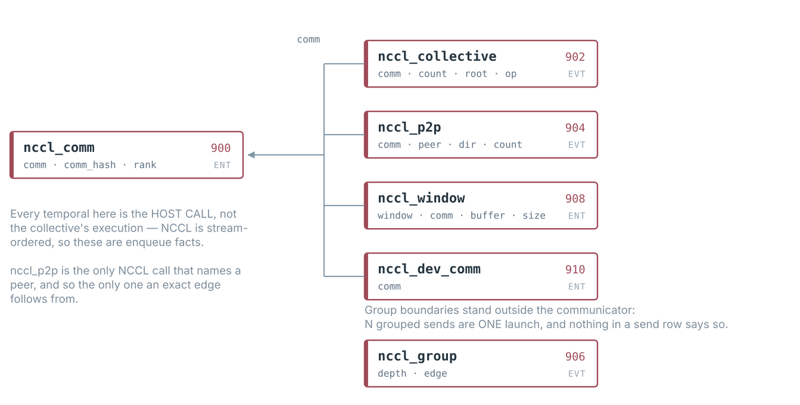
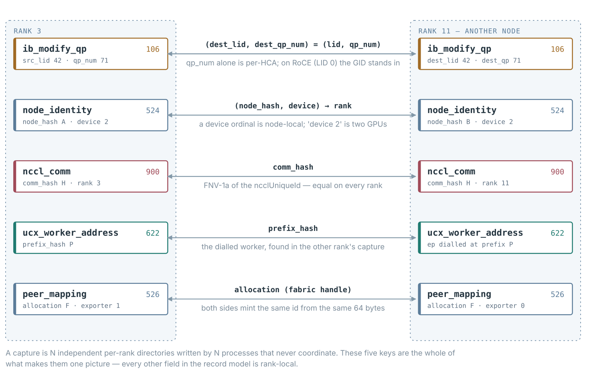
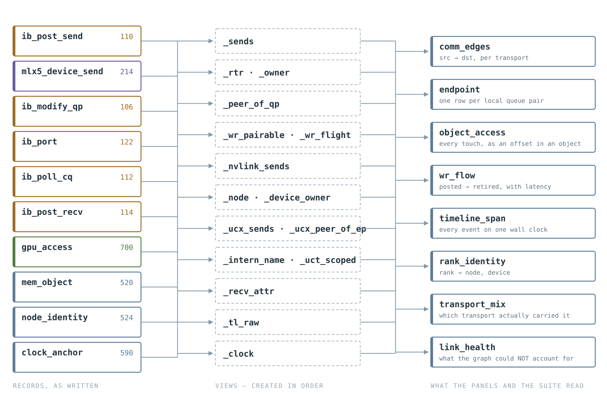

Every entity a pcomm capture can hold, what it is keyed by, and which join carries it to the next one. Four archetypes, six provider ranges, 69 record types — and five keys that turn N per-rank directories into one picture.
Every box is one record type. The border colour is its provider range, which is a real constraint and not a decoration: each provider owns a disjoint block of type_ids, which is what lets two passes over the same workload merge into one rank's picture without either knowing about the other.
No record is self-describing on its own. A record is a fixed-stride element of a packed array; its type comes from the stream header above it, and its high-cardinality fields are dense handles that mean nothing without the capture's own dictionary.

Records every provider needs and none owns. mem_object sits here rather than in gpumem's range because any provider holding an address may emit one; gpu_kernel sits here because the fact has two possible instruments and a capture must know it under either, and cuda_memcpy for the same reason one step further out — interposing the copy API needs no CUPTI subscriber at all.

cuda_memcpy has no arrow into the dictionary because it has no Handle field: CUPTI reports neither a name nor an address for a copy, which is also why object_access cannot place this traffic. The three arrows out of gpu_access are the whole of its attribution: an object, a kernel launch, and a source line. launch is a join key and not a time — the producer records the key and the reader does the join.LD_PRELOAD over libibverbs: the host control and data plane, as the application called it. Fifteen record types, the largest family in the model.

pd handle and no record ever creates a protection domain, so a query can group by it but never name it.The control plane IBGDA uses instead of verbs. A GPU-initiated run creates its queue pairs with mlx5dv_devx_obj_create, so nothing in the ibverbs range sees any of it.

mlx5_device_send is deliberately the same shape as ib_post_send so the reader can union them and a consumer of the comm matrix never learns which plane a run used.UCP transport hooks. The spine is ownership — a context owns workers, a worker owns endpoints — and every operation attaches to whichever of the two the API itself names. The band below is the UCT layer, reached through uct_iface_ops_t: on the HPC-X stack it is the only data plane a capture has, because UCX rings its own doorbell and neither ib_post_send nor mlx5_device_send ever fires.

tag_flow pairs a ucx_tag_send with the uct_send rows it became, on the tag, per (rank, tag) rather than per message — a tag is reused, and pairing individual operations would need an ordering assumption between two layers that buffer independently. Traffic through untagged doors carries its tag inside an AM payload and stays unjoinable; transport_mix accounts for that by transport instead.The one provider with two doors, and they answer different questions. Six host-API record types hang off the communicator and say what the application asked for; three profiler-plugin records say what NCCL decided — the algorithm, the protocol, and the decomposition into per-peer proxy operations.

Everything above is rank-local. A capture is N independent directories written by N processes that never coordinate, so joining them needs an identity both sides mint independently and agree on. There are exactly five.

link_health rather than as a confident matrix over a hole.The records are what a capture holds; these eleven tables are what anything actually queries — the UI panels, the suite's assertions, the agent's SQL. They are outputs of the reader rather than parts of the format, which is why they carry no schema.

link_health is the one table whose expected state is empty.| id | record | kind | what it is |
|---|---|---|---|
| the engine 500–599 | |||
| 510 | intern_key | ART | handle → uint64 for the numeric domains. The dictionary behind every Handle. |
| 512 | intern_string | ART | handle → (offset, length) into intern-blob.bin. Strings are the one thing that cannot sit in a fixed-stride record. |
| 520 | mem_object | ENT | A memory object, [alloc, free). Internal rather than gpumem's range because any provider holding an address may emit one. |
| 522 | entity_close | EVT | An entity's lifetime ended. One shared type for every provider; opener is the type_id of the record that should have opened it. |
| 524 | node_identity | ART | Which machine this rank ran on. A device ordinal is node-local, so run_device 0 on two nodes is two different GPUs. |
| 526 | peer_mapping | ENT | One process's mapping of a shared allocation, keyed by the CUDA fabric handle — FABRIC only, because a POSIX fd names the driver node. |
| 528 | gpu_device | ART | One visible GPU, named by PCI address. What a device ordinal actually points at, so two ranks that both say 'device 0' can be told apart. |
| 532 | invocation | ART | What the TRACER was asked to do — argv, the captured environment, the providers that loaded, the build, and which .so files were actually mapped. |
| 530 | gpu_kernel | EVT | One kernel's EXECUTION window. Never submission: the two are ~800x the kernel's own duration apart. |
| 534 | cuda_memcpy | EVT | One host-initiated memory copy, on the copy engine. The only record for traffic no other family can see: a copy engine retires no instruction and posts no work request, and cudaMemcpyPeer between two GPUs is communication. |
| 590 | clock_anchor | ART | A clock-domain calibration anchor. Two per rank per domain, which is exactly what a line needs. |
| 592 | capture_status | ART | Whether this rank's capture is COMPLETE. Written only by a normal finalize, so a rank in clock_anchor with no row here started and did not finish — absence says what no counter can. |
| gpumem 700–799 | |||
| 700 | gpu_access | EVT | One GPU memory access — the firehose, one row per instrumented SASS load or store. |
| 740 | source_line | ART | One pc → source location row. Needs -lineinfo; empty without it. |
| 760 | attribution | EDG | The generic relation row, for links too sparse to inline: subject, object, and a predicate. |
| ibverbs 100–199 | |||
| 100 | ib_mem_region | ENT | A registered region, [reg, dereg). lkey/rkey are what a send or a receive resolves its buffer through. |
| 102 | ib_queue_pair | ENT | A queue-pair endpoint, [create, destroy). |
| 104 | ib_completion_queue | ENT | A completion queue. Hangs off a context, not a pd — the one verbs object that can exist before any protection domain. |
| 106 | ib_modify_qp | EVT | A state transition. The →RTR row carries the remote endpoint, which is what makes the connection topology recoverable. |
| 108 | ib_shared_recv_queue | ENT | A shared receive queue. Depths are the device's answers, not the caller's request. |
| 110 | ib_post_send | EVT | One posted work request — the network firehose. |
| 112 | ib_poll_cq | EVT | One completion drained from a CQ. |
| 114 | ib_post_recv | EVT | One posted receive. addr/lkey resolve the receive buffer to a region — the question a capture could not answer before this record. |
| 116 | ib_req_notify_cq | EVT | A CQ armed for notification: the only evidence an application sleeps on interrupts rather than spinning. |
| 118 | ib_address_handle | ENT | A UD address handle. Carries the destination a UD send is aimed at, which lives nowhere else in the API. |
| 120 | ib_device | ENT | The HCA behind one context. node_guid is the globally unique name a LID only approximates. |
| 122 | ib_port | ENT | One physical port and its LID, read at device open, so a rank that never moves traffic still has one. |
| 124 | ib_recv_cqe | EVT | The raw CQE's own account of a receive — written only where it agreed with the ibv_wc beside it. |
| 126 | ib_qp_signalling | ART | sq_sig_all, which certifies that every work request completes. Additive, because a layout is immutable once a capture holds it. |
| 128 | ib_post_send_sg | EVT | One scatter-gather entry — the LOCAL buffer, which ib_post_send does not keep. Full mode only. |
| 130 | ib_mem_region_iova | ART | The iova a region was registered at, only where it is not the base. A zero-based region (NCCL GIN) is addressed by offset: VA = base + (remote_addr − iova). |
| mlx5dv / DEVX 200–299 | |||
| 200 | mlx5_umem | ENT | A buffer handed to the NIC. base is 0 under dmabuf: the buffer is named by fd and the address is an offset. |
| 202 | mlx5_uar | ENT | A User Access Region — the doorbell page a GPU writes to say a WQE is ready. |
| 204 | mlx5_devx_cmd | EVT | One DEVX command, decoded or not. Recorded even when the opcode is unknown, so a version boundary is visible. |
| 206 | mlx5_devx_qp | ENT | A DEVX queue pair — the GPU-initiated counterpart of ib_queue_pair. |
| 208 | mlx5_devx_qp_connect | EVT | The →RTR transition on the DEVX plane, carrying src_lid for the same reason verbs does. |
| 210 | mlx5_queue_pair | ENT | An ordinary verbs QP reached through mlx5dv_create_qp. perftest creates its queue pairs this way and never calls ibv_create_qp. |
| 212 | mlx5_doorbell | EVT | The GPU rang a doorbell. Emitted even when the WQE cannot be read, so an undecodable doorbell is a visible row. |
| 214 | mlx5_device_send | EVT | A send WQE, decoded — seen at the GPU doorbell, the host doorbell, or by the send-queue watcher, as submitter says. Same shape as ib_post_send so a reader can union the two planes. |
| 216 | mlx5_devx_cq | ENT | A DEVX completion queue: its identity and geometry. Not its polls — IBGDA consumes a CQE with GPU loads and writes no CQ doorbell record, so a completion being taken leaves no trace to capture. |
| 218 | mlx5_send_coverage | ART | The send-queue watcher's coverage, one row per rank: published = decoded + lapped + dropped, so a query can ask whether anything was missed. No row means the rank did not exit normally. |
| ucx 600–699 | |||
| 600 | ucx_context | ENT | A public UCP context. |
| 602 | ucx_worker | ENT | A worker owned by a context. |
| 604 | ucx_endpoint | ENT | An endpoint owned by a worker. |
| 606 | ucx_tag_send | EVT | A tagged-send intent. count is the raw UCP datatype count. |
| 608 | ucx_tag_recv | EVT | A tagged receive POSTED — capacity offered, not bytes delivered. Keyed by worker: the match is by tag across every peer. |
| 610 | ucx_rma | EVT | A one-sided put or get. |
| 612 | ucx_am_send | EVT | An active-message send. Header and payload keep separate lengths — one is control traffic, the other is data. |
| 614 | ucx_mem_map | ENT | A UCP memory registration. resolved says whether the extent is the effective one or the requested one. |
| 616 | ucx_worker_progress | EVT | A progress call that progressed something. Full mode only, and telemetry rather than a golden. |
| 618 | ucx_tag_probe | EVT | A probe that FOUND a message. length is the one true byte count in the UCX family. |
| 620 | ucx_atomic | EVT | A remote atomic, with op NORMALISED across the three UCX opcode spaces that number the same operations differently. |
| 622 | ucx_worker_address | ART | This worker's own address, as two hashes: the prefix a cross-rank join uses, and a full one that makes a prefix collision visible. |
| 624 | ucx_ep_connection | ART | Which remote worker an endpoint was dialled at. |
| 626 | ucx_rkey | ENT | A remote key, lifetime [ucp_ep_rkey_unpack, ucp_rkey_destroy). What ucx_rma.rkey and ucx_atomic.rkey join to; before it, they named a handle nothing created. |
| 628 | ucx_rkey_pack | ART | A registration packed for export. Carries the whole buffer's hash, which the consuming side cannot compute — ucp_ep_rkey_unpack takes no length. |
| ucx_deep 800–899 | |||
| 800 | uct_iface | ENT | One (transport, device) interface. tl_name/dev_name are the only place a capture says whether a UCX message left the node. |
| 802 | uct_ep | ENT | One UCT endpoint — a LANE of a ucp_ep, not a queue pair. A ucp_ep fans out over several, possibly on different transports. |
| 804 | uct_send | EVT | One UCT data operation: the wire, as close as a host interposition reaches. payload means sent, requested or advertised depending on the op family, and must not be summed across them. |
| 806 | uct_binding | ART | Which UCX this bound to and whether the layout guard allowed patching. Read it first when uct_send is empty. |
| nccl 900–999 | |||
| 900 | nccl_comm | ENT | A communicator. comm_hash is equal on every rank; the comm pointer is not, so the hash is the only cross-rank join. |
| 902 | nccl_collective | EVT | One enqueued collective. count is ELEMENTS, and the product with the datatype width is LOGICAL size — not what crosses the wire. |
| 904 | nccl_p2p | EVT | The only NCCL call that names a peer, and so the only one an exact edge follows from. |
| 906 | nccl_group | EVT | Group boundaries: N grouped sends are ONE launch, and nothing in a send row says so. |
| 908 | nccl_window | ENT | A registered symmetric window — what makes GPU-initiated NCCL attributable where internal channel buffers are not. |
| 910 | nccl_dev_comm | ART | The existence fact 'this workload initiates communication from the GPU'. Nothing else in a capture states it. |
| 912 | nccl_prof_comm | ART | The communicator as the profiler plugin was told about it. Carries NCCL's own commHash — the only name the plugin is ever given, and so the only join back to nccl_comm. |
| 914 | nccl_coll_exec | EVT | The collective as NCCL EXECUTED it: the algorithm and protocol it chose. Its temporal is the operation's lifetime inside NCCL, NOT nccl_collective's enqueue. |
| 916 | nccl_proxy_op | EVT | Where a collective becomes per-peer traffic, linked to it by NCCL's own parent id. n_steps × chunk_size is what NCCL PLANNED, not bytes a completion confirmed. |
Read alongside the figures: these are places a box is missing, not places a box is wrong.
ib_queue_pair, ib_mem_region, ib_shared_recv_queue and
ib_address_handle all carry a pd handle that nothing ever creates. Grouping by it
works; naming it does not.
entity_close.opener is a type_id, so the mechanism is open to every provider — but a close
naming a subject no open record created is not a bug in the close hook. It is evidence of a creation door
that is not hooked, and it is counted rather than suppressed.
cupti (300–399), libfabric (400–499) and ucx_deep (800–899) are allocated in
ids.hpp and have no records. The cupti range names an instrument, which is why
gpu_kernel deliberately does not live there.
Of the five temporal kinds, four are in use. Nothing yet emits a Counter — and gpu_access's
Window is a bound, not a measurement, which a renderer that draws it as a duration would silently
turn into a false claim.